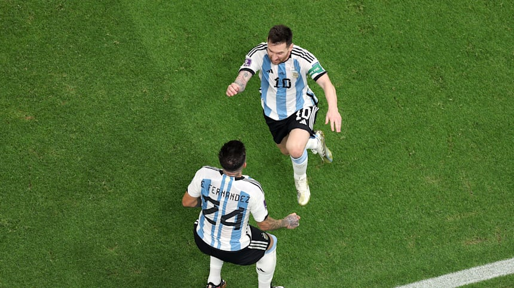

Veysel Aras
Merhaba, ben Veysel Aras. Sakarya Üniversitesi Bilgisayar Mühendisliği Bölümü bölümü öğrencisiyim. İlgi alanlarım arasında yapay zeka ve işlemci konuları yer almakta. Bu alanlarda üniversite eğitimimde Kendimi geliştirip geleceğimi bu alanlarda inşaa etmek istiyorum.
Futbolu izlemekten ve oynamaktan zevk alırım. Bunun yanında ara sıra MMA, e-spor maçlarını da takip ederim. Matematik ve fizik dersleriyle ilgiliyimdir. Kitap olumayı severim ve tarih alanına ilgim vardır. Elimden geldiğince kitap okumaya çalışırım.
c++, c#, python dillerini giriş seviyesinde bilirim. Boş zamanlarımda bu diller ile project euler sitesinden matematik sorularını çözmeye çalışırım. Ayrıca web teknolojileri dersinde HTML-css-JS-PHP gibi dillerde kendimi geliştirmekteyim.
Boş zamanlarımda IMDB top 250 listesindeki filmeleri izlerim. Favorilerim arasında Esaretin Bedeli, Batman(Christopher Nolan) serisi, Yüzüklerin Efendisi serisi, Dövüş Klubü, Er Ryan'ı Kurtarmak, Hayat Güzeldir, Schindler'in Listesi ve Yıldız Savaşları serisi var. Fazla sabırlı olmadığımdan pek fazla dizi izleme alışkanlığım yoktur. Ama Breaking Bad, Sherlock, Dark gibi muazzam dizileri izledim. Eğer izlemediyseniz Dark'ı kesinlikle öneririm.